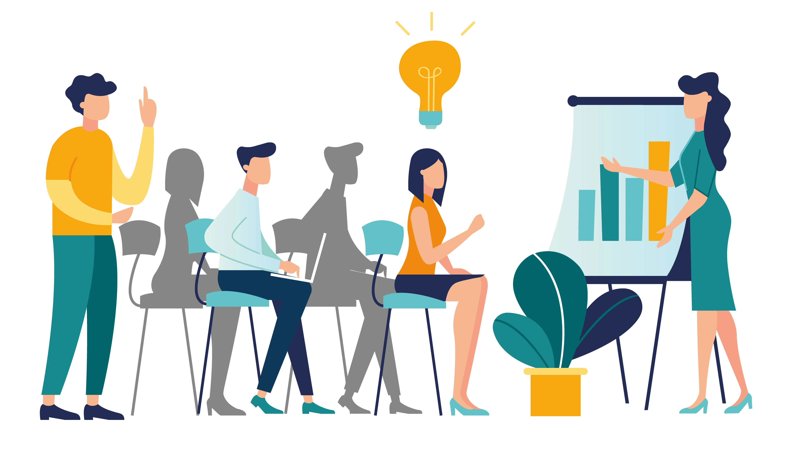

Brindar a los ciudadanos/organismos/áreas de gobierno de los tres niveles (Nacional, Provincial y Municipal) inducción y/o capacitación en temas que creemos son necesarios para lograr fortalecer la eficiencia y efectividad en la gestión pública. Se realizan a través de plataforma MOODLE o bien a través de encuentros presenciales, según la demanda y/o necesidad de quien/quienes lo requieran.

